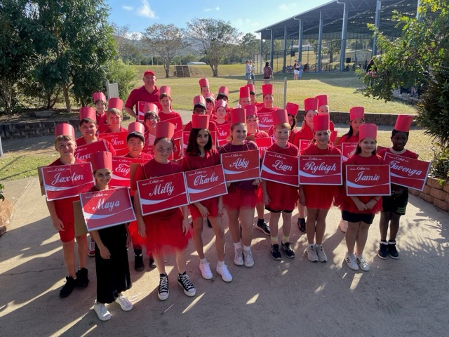

🏠 Back to Homepage
🛍️ 11th of April – Park Run, Plans & Present Shopping 🎁
Today is Saturday the 11th of April 🌤️
My dad woke up super early to go to park run 🏃♂️
When he got home, my mum got ready and went on a walk
with her friend 🚶♀️✨
When she gets back, we’re going to the shops 🏬
to buy a present for my cousin’s 14th birthday dinner 🎂🎈
We might go to City Beach, The Reject Shop,
or maybe even Ghanda 👀
The other day I found these REALLY cute pants at Ghanda
and I’m still thinking about them 😭💖

✨ THE pants I can’t stop thinking about ✨
✨
💖
🛍️
25th of March💅
This set of 24 hours is called the 25th of March.
In period 1 we had P.E
but unfortuanately we didnt do anything interesting because we were in the classroom doing theory
Then we had math
and we also didn’t really do much but right before class he came up to me and my friend and said to us "do me a favour " so he then put out his hands in a fist and said "pick a hand" so my friend picked his left hand and so i picked his right hand and my friend got 1 mini duck figurine and i got 3 of them.
Then it was the 2nd best time of the day...lunch 🥪 but all i had was a packet of noodles.
then in period 3 we had H.A.S.S
but we didnt do anything very interesting except for write down heaps of stuff we wont even remember in about 1 month time.
Then in period 4 we had Music
but unfortuanately we didnt do anything much because we have all finished our assesment
and today my school dress finally showed up in store that we ordered about 3 or 4 weeks ago so im going to wear it tommorow.
✨
⚡🌈 23rd of March – Chill Classes & Speech Day 💅🎤
Today is the 23rd of March ✨
First up I had Music 🎶
but we didn’t do anything interesting because we finished all our assessments.
Then we had P.E 🏃♀️
and we also didn’t really do much.
Then it was lunch 🥪🤤
In period 3 we had math
which is always fun because the teacher gives out candy for like no reason 😭
Today he gave me a Mentos because he liked my
Kmart stick-on nails 💅✨
Then in period 4 we had English 📖
and we had to do our speech 🎤
and I actually think I did pretty good 😌✨
🎮⚡ SCHOOL DAY – ARCADE MODE ACTIVATED ⚡🎮
Today I had English in period 1 📖
We did stuff linked to our Writer’s Toolbox 🟨
In period 2 we had Maths
and honestly… it’s kinda fun 😌
We just go on Maths Pathways and do modules all lesson
and then finish with a game like Blooket or silent ball 🎯
Then it was lunch 🥪😋
After that we had Tute
which is always fun because we basically just talk or play games
but it’s only 15 minutes 😭
Then we had Religion
and we had a substitute
She let us sit with our friends BUT she was kinda mean
and sent like 3 kids to the planning room 😬
Then in period 4 we had Science 🧪
It was fun but we didn’t do any experiments 😔
🌇 16th of March – NAPLAN, P.E & a Sad Little Dog 🐾
Today is the 16th of March ✨
In period 1 I had Math.
After math we had Science, but instead of going to the science
room we had to go to our tute room because we had
NAPLAN.
Then it was lunch 🥪
After lunch we had tute for about 15 minutes
and then we had Religion.
Then we had our second lunch break and me and my friends
changed into our P.E uniforms.
Period 4 was P.E 🏃♀️
Then it was finally home time.
Me and my cousin Evelyn walked to the
party shop in Red Hill where I get picked up.
While we were walking we saw a really cute dog 🐶
It was brown and kind of skinny (not crazy skinny though)
and it was crying and howling 😢
I felt really bad for it.
🐾
🐾
🐾
🌼 1st of March – Sunday Park Day 🌤️
Today is Sunday the 1st of March 🌸
I woke up and got dressed for the day ✨
Then I played a couple of games with my
Mum, sister and Nana ❤️
It was actually such a nice chill morning.
Later we went to Zoe’s little athletics thing,
but it doesn’t start until next week…
So instead we went to a nearby park 🌳🌤️
Unexpected park adventure unlocked.
🌧️ 27th of Feb – Rain, Lockers & Couch Mode 🛋️
Today I had English in period 1 📖
Then I had Math, which is right next to our lockers
(very convenient because I had to grab my math stuff first 😌).
At lunch we had to eat inside the Hall because it was raining
really really heavy 🌧️🌦️
Period 3 was H.A.S.S. 🌏
Then… SNACK BREAK 🤤🥪
In period 4 I had Japanese 🇯🇵
When the bell went, I went straight to my locker,
swapped all my books, and texted Mum to say I was on my way
to the party shop where I get picked up.
I got driven home 🏠 and now I’m sitting on the couch 🛋️
writing this blog update.
After this? I’m going to watch
MrBeast inspiring stories on Prime Video 🎬✨
🌌 26th of Feb – Low Battery & Science Energy 🧪⚡
Today I woke up super early and got ready for school 🌅
Dad dropped me off at about 7:15am.
We have to put our phones away at 8, so I was sitting in the eating area
on my phone waiting for my friends... until suddenly ⚠️
I got a pop-up saying I only had 10% battery left 😭📱
So I packed it up and put it in my locker.
Then out of nowhere I see Mia walking toward me ✨
We chatted for a bit until the bell rang.
I also saw Amelia at her locker but I was already lining up
outside the Japanese classroom.
Period 1: Japanese 🇯🇵
Period 2: Religion
Then finally Lunch 🥪
Period 3: Tute
Then snack break 🍎
And Period 4 was SCIENCE 🧪🧫🧬
We did some very science-y stuff. Very official. Very lab vibes.
And that was my galactic school day ✨
🍓⚡ 25th of Feb – P.E, Mentos & MUSIC!!! 🥁🎹
Today was the 25th of February ✨
In period 1 I had my 2nd favourite subject — P.E 🏃♀️
We went to the oval and played bull rush and another game where
we had to stay inside a box and rip each other’s tags off our Velcro belts 😭
It was actually SO fun.
Then I had my 3rd favourite subject — Maths 📐
The best part? My teacher gives us fruit Mentos 🍬
Instant motivation unlocked.
In period 3 we had H.A.S.S 🌏
And in period 4 we had my ULTIMATE FAVOURITE 🤩
MUSIC!!! 🎶
We got to play the electric keyboard ⚡🎹
and the drum kit 🥁
Best way to end a school day honestly 💖✨
🌅 23rd of February – Sunset School Day 🎶
Today was the 23rd of February ✨
This morning I had English, and after that in period 2 we had
Religion. In Religion we got told about an upcoming assessment
which was… interesting 👀
Then it was finally lunchtime 😋🥪
After lunch I had Science but we didn’t do any experiments
which was kind of sad because experiments are the best part 🧪
Then we had our super short break that we call
snack break 🍎
After that it was back to classes, and my last class of the day was
HASS. All we did in HASS was work on this history thing on a
website called Education Perfect.
And that was my day 🌇✨
♪
♫
♬
♩
🔑✨ LOCKE & KEY ERA – 22 FEB ✨🔑
Today is Sunday the 22nd of February 🌤️
I woke up early and came downstairs and my mum wasn’t here
because she went for a run 🏃♀️
My Nana had a sleepover last night but she wasn’t here either
because she had to drive home to let Boswell out for a
peepee and a poopoo 🐶😂
Then she came back to babysit me, Zoe and Ivy while Mum and Dad
went out for a nice brekkie ✨
I finished Young Sheldon and needed a new show…
and I found LOCKE AND KEY 🔑👀
It’s about a family that moves into an ancient mansion and the three
kids — Bode, Kinsey and Tyler — find magical keys hidden
around the house ✨🔑
When Mum and Dad got home we kept watching it together 😌
For lunch we had Mum’s elite rice rectangles with tuna and mayo 😋
Later Nana left to go to a friend’s house so we gave her a big
kiss and cuddle goodbye 💖
And then I continued my Locke & Key marathon 🔑📺✨
🏫 Finished Week 3 of High School!! ✨
Today I officially finished my THIRD week of high school 🏫😌
I can’t believe I’ve already survived three whole weeks!!
In Period 1 I had English 📚
Then in Period 2 I had Math ➕✏️
After that it was lunch 😋
In Period 3 I had H.A.S.S 🌏
Then we had another lunch break which was nice 😌
And in Period 4 I had Japanese 🇯🇵✨
Week 3 = officially complete ✅
High school survival level unlocked 😎
🏫 31 January – First Week of High School… SURVIVED 😮💨✨
Today is the 31st of January and I have officially
survived my first week of high school 🏫😌
On the first day we stayed in our tute classroom all day
and met our tute teacher. I got Mrs McPherson and she seems
really fun so far 😄
On the second day we were still in the tute room and just
got a bit of a feel for the school and how everything works.
The third day (Thursday) was more exciting 👀
I had Japanese, then Religious Education (R.E),
then first break.
After that we had prayer and tute, then I went to the
H.A.S.S room for H.A.S.S.
Then it was second break, and in period 4
I had Science 🧪✨
On day 4 (Friday) for period 1 I had English,
then Maths for period 2 ➕✏️.
After first break we had prayer and tute again,
then H.A.S.S for period 3.
After second break we finished the day with Japanese 🇯🇵
Today is Saturday 🎉
We didn’t go to parkrun this morning, so we’re going for a
walk this afternoon instead when my Nana ❤️
gets here for a sleepover 💤
And for some reason today I really want to go to the shops…
even though I don’t have much money 💵😢
🎄 25 December – CHRISTMAS DAY!!! 🎁✨
Today is the 25th of December and it is officially
CHRISTMAS DAY!!! 🎄🎉
We woke up early and opened our stockings first 🧦✨
One thing I got was a 2-set of Bubble skincare (cleanser +
moisturiser), a Bubble lip balm, and then we had
yummy croissants with eggs and bacon for brekkie 😋🥐🍳
Then we opened ALL our presents 🎁🎁🎁
From Santa 🎅 I got an elephant Jellycat that I have
wanted for SO long 😄💖, a Clueless Polly Pocket,
and a silky hair bonnet to wear to bed… except Santa got
the wrong bonnet 😭
From my parents I got a heap of books 📚, a
mini ice-cream maker 🍦 (it doesn’t really work so we’re
going to take it back), a Gui Gui Salish Matter slime,
and honestly SO much more that I can’t even remember it all 😆
At 11:30am my dad’s side of the family came over 🎄
From my auntie I got a fluffy blanket, peach lipstick 💄
and a Disney plushie.
From my uncle I got a lunchbox and a 2-set of lip glosses.
From Grandad I got clothes that are
WAY too small for me 😭 and some chocolates 🍫
And from NANA 😘💖 I got Peter Alexander PJs,
Sol De Janeiro, Sportsgirl body wash & body mist,
and a BIG box of Favourites chocolates 😍🎁
After all the presents, we went on an
inflatable water slide 💦😆
Then everyone went home… and
Christmas Day was over 😭😭😭
🎄 23 December – Christmas Eve Eve Excitement ✨
Today is the 23rd of December which means today is
Christmas Eve Eve 🎄🎄
And tomorrow is Christmas Eve!!! I’m SO excited 😆✨
This morning I woke up and we had GREEN pancakes for brekkie 💚🥞
They were actually so yum and super fluffy 😋
Today I watched a bit of TV 📺 and I also helped my
mum around the house 💖
We also worked on the puzzle our family is doing right now 🧩✨
We are SO close to finishing it and that makes me really excited 😭
I’m just so excited for tomorrow because it’s
Christmas Eve 🎄
which means there’s only ONE DAY until
Christmas Day!!! 🎁🎉✨
🎄 22 December – Sleepover Chaos & Christmas Countdown ✨
Today is the 22nd of December which means there are only
3 DAYS until Christmas YAYYY 🎄🎁
I’m so excited 😆✨
I just came home from a sleepover at my cousin Lucia’s house 💤💖 and it
was so fun!! We played café ☕🍰 and we stayed up
late like always 😌
This morning we put face masks on 🧖♀️✨ and watched a movie — I think it
was Zootopia 🦊🐰
At the sleepover my two little sisters had a sleepover as well and it was
really fun… except when my sister Zoe spewed 🤢💀 because she got
too hot 😭
Today at Lucia’s house we got into our togs 👙💦 and jumped on the
trampoline with the water spraying and it was SO FUN 🤪💧
When we got home my little sisters watched some TV 📺 while I helped my
mum make rum balls for Christmas in 3 days 🤪🍫✨
Then my mum had to go to work and our dad looked after us — and we
got to go to KFC 🍗🍟 which was so yummy 😋🤤
After that we went to Woolworths 🛒 and got
frozen chippies, rainbow Golden Gaytimes and
normal Golden Gaytimes — they are SO GOOD 😍🍦
When we got home we played outside 🌞, jumped on the trampoline and
I also practiced shooting in the basketball hoop 🏀
🎄 20 December – Yellow Top Joy & Christmas Countdown ✨
Today is the 20th of December which means there are only
5 DAYS until Christmas 🎄🎁
Today I went to the shops and I finally bought a top that I’ve wanted
for such a long time 😭✨
It’s a yellow tube top and it’s SO CUTE — I actually love it
so much 💛💛
Tomorrow I’m having a sleepover at my cousin’s house with my
two little sisters 💤👯♀️
It’s going to be so fun and I’m really excited 😆✨
And tonight my nana is sleeping over 🥹💖 which makes everything feel
even more cozy and Christmassy 🎄✨
🎄 15 December – X-Rays, Hungry Jacks & Slime Victory 🎁
Today I woke up early and had no brekkie 😭 because I had to go to a
radiology place to get my teeth x-rayed 🦷📸
After that we were STARVING so we got Hungry Jacks 🍔🍟 and drove home —
but when we arrived we realised that my whole meal was missing 💀💀
So we waited until my dad got home from work and then me and my mum went to the
shops. On the way there we went through Hungry Jacks AGAIN to finally
get my meal 😌👏
At the shops we went into Big W to look for Christmas things 🎄 and my mum
bought me some presents — like two shirts and a skirt 👕✨
AND THENNNN I found the Gui Gui slime with Salish Matter on the box —
the one I’ve been searching Big W for AGES 😭💖
The first one I saw had a ripped box so I was about to ask an employee if
they had any others in stock…
BUT THEN I FOUND A BRAND NEW ONE with a non-ripped box hidden at the
bottom of a random shelf 😮✨
So obviously I grabbed it and got on my way 🏃♀️💨
🎄 14 December – Christmas Chaos & Toast Theft 🎁
Yesterday I had a sleepover at my cousin’s house 💤✨ and then my parents
picked me up and we went straight to my mum’s sister’s house for a
Christmas party 🎄🎉
I got a whole bag of stuff which was super exciting — even though it was
just a small bag 😌🛍️
This morning I woke up early and made my little sister
avocado on toast for brekkie 🥑🍞
(and yes… I stole half of her toast 😏💀)
Now I’m just sitting in the lounge room because my mum is
wrapping Christmas presents 🎁✨
and I’m not allowed to look because some of them are for me 👀🚫🎄
🌟 29 November – Saturday Adventures! 🎁🎅
Today was actually super fun! I went to one of my friend's birthday parties and the party bag had heaps of goodies in it which was AMAZING 🤩. After that, we got Santa photos... even though the Santa looked kinda like a delinquent 😂 but it was still pretty fun!
🎉 28 November – Fun Times! 🥳
Today was super cool too! I spent time with friends and we played some fun games. I even made a new little craft project that turned out really cute! 😍
Monday — 24th November 2025
Today at school we had P.E. and we had to do 3 different types of dancing 😭
AND we had to dance with the opposite gender… so I had to dance with all the boys 😭
But THANKFULLY most of the boys were away today so I only had to dance with about
7 or 8 of them 💀
After dancing we got to go bowling 🎳 and it was actually sooo fun!!
Hardly anyone was at school today because everyone got sick at camp 🤢
People were puking everywhere and I even caught it and I’m still a little bit sick
from Wednesday morning 😓
Friday — 14th November 2025
Today we had Digital Technology at school 💻 and after school I went
straight to packing my suitcase for camp on Monday! ⛺🎒
I started packing at about 3:30 or 4pm this afternoon and now it’s
7:00pm — and I only have 3 items left to put in my suitcase!!
It took me around 3½ to 4 hours but honestly I think I’ve done soooo good 😄👏
I’m almost ready for camp!!!
Thursday — 13th November 2025
Today we had Health at school and we had to draw a self portrait — but half of the face was realistic and the other half showed our hobbies and things we like 🎨💖 Then we had Religion and me and my friend Jamie coloured in a Pegasus 🦄✨ It was super fun and creative!
Wednesday — 12th November 2025
Today I had science 🧪 and HASS 🗺️ at school!
In HASS we started our DIG assessment and we all spun a spinner 🎡
I got something that I forgot 😅 but I traded for Health 🩺 instead!
Thursday — 7th November 2025
today we had digital technology and sport 🏫✨
I do school based sport so we stay at school and we got to play games AND watch Dog Man on the TV 📺🐶
and we also got to play in the hangar — it was soooo fun!!! 🤩
Wednesday — 6th November 2025
today at school we had music and we had to SING “SODA POP” 😭😭 it was the actual WORST. we also had to do an assessment in music 😐 and after music we had health — but I forgot what we did in health 💀
5th of November
today we had science at school and we were learning about the pressure of the electrons in the wires 🔌
we used syringes 💉 and water to test out high voltage vs low voltage — for high voltage we had to push really hard on the syringes and for low voltage we didn’t have to push much at all
it was actually kinda cool!
3 November 2025
Today we had P.E again and it SUCKED because we had to dance with the boys AGAIN 😢
and half of my friends were away at school today.
Elise was the only one there so I hung out with her.
AND I EVEN DID HOMEWORK at LUNCH!!
That kinda shows how not fun today was because I HATE homework 😢
🎃 28 October 2025 🎃
Today my parents didn’t pick me up from school but you know who did???
Elise’s mum — and Jamie came too! 🥳
It was so fun but we had to pick up Elise’s brother also.
When we got to Elise’s house her mum painted our nails 💅 ready for Halloween 👻🎃!
We’re going as the Chipmunks 🐿️ and we also played some games at her house.
Then we walked to my house to get my costume and we all got in our outfits!
I’m Simon (the smart one 🤓), Jamie is Theodore (the chubby one 🐻), and Elise is Alvin (the awesome one 😎).
We all look so good in our costumes — not gonna lie 😝✨
🎃 27 October 2025 🎃
Today I went to school and we had P.E — we had to dance with all of the boys 😬!
When I got home, my Halloween costume came today 😃!
Me, Jamie, and Elise are going as Alvin and the Chipmunks 🐿️!
I’m going as Simon (the smart one 🤓), Jamie is Theodore (the chubby one 🐻), and Elise is Alvin (the awesome one 😎).
I tried on the outfit and it fits really well! 🧛♀️✨
🛍️ 25 October 2025 🛍️
Today my auntie came over to give me a surprise and the surprise was a Disney Labubu!
I don’t really know what they’re called but we call them Disney Labubus 😆 — she got me a mystery box and I got Pluto! 🐶💛
Later today I went shopping with my friends Jamie and Elise! We went to Kmart, Ally, Sportsgirl, The Body Shop, Big W, Cotton On, Rebel, Eat Up (sushi 🍣), Boost (smoothies 🥤), and Coles!
Jamie even got me a Mango Magic smoothie 🍹 — it was sooo yummy! 💕🛍️
24 October 2025
Today I had Digital Technology at school! 💡
We were using the Microbit again and we were making a Step Counter 👣.
It was really fun seeing it count steps as we tested it out in class! ⚙️✨
17 October 2025
Today I went to school and we had Digital Technology! 💻
In that lesson, we were learning how to use Microbit — there are different lessons to follow and our whole class had to do the Step Counter lesson!
It showed us how to make the Microbit count steps, and even I did it — and it worked really well! ⚡
🎆 Thursday, 16th October 2025 🎆
Today was my second day back at school for Term 4 after our big holiday to Japan 🇯🇵!
I haven’t posted an update in a while because we went to Disneyland 🏰, then got on a cruise ship 🚢 where I had no internet.
After that, we went to Tokyo Disneyland 🇯🇵✨!
At the Disney Store in Tokyo, I got 5 keychain plushies 🧸💖 and my auntie bought me a sleeping mystery box plushie —
I got Donald Duck 🦆💙 and I’m so happy!
My cousin got Scrump (Lilo’s plushie from Lilo & Stitch) 💚,
my other cousin got Nick Wilde 🦊 from Zootopia, and her brother got Piglet 🐷 from Winnie the Pooh —
but they swapped so now her brother has Nick Wilde and she has Piglet! 💕
✨ It was such a magical trip, and I’m still so happy thinking about it! ✨
📅 Tuesday, 16th September 2025
Today we got on a plane to Brisbane ✈️ at 3:00 in the afternoon.
When we arrived, we checked into our hotel 🏨.
After that, we went to the DFO shopping centre 🛍️ and visited the Nike store 👟.
I even got a new shirt 🎉.
OUR HOLIDAY HAS FINALLY BEGUN 🎉!!!!! Woo hooooooo I’m so excited 😍✨
📅 Monday, 15th September 2025
Today is Monday and at school we had P.E.
In P.E we were practicing drop kicks ⚽.
But the best part is… TOMORROW WE ARE FLYING TO BRISBANE ✈️
for the start of our BIG HOLIDAY!!!
Woohooooooo 🎉🥳🥳🥳🥳🎉🎉🎉
📅 Sunday, 14th September 2025
Today is Sunday and we only have 1 or 2 days
until our big holiday that goes for 1 whole month! 🎒✈️
I’m sooooo excited 🌴🗺️✨.
🌍 Saturday, 13th September 2025 ✈️
Today I helped my mum pack for our holiday that is in just 3 days! 🎒
First, we are going to Brisbane, then flying to Fiji 🌴,
after that we’re heading to America 🇺🇸 for about 5 or 6 days.
Then we’ll get on a 17-day cruise 🚢 and finally get off the boat in Tokyo 🇯🇵.
I’m so excited for this adventure! 🌟
📅 Friday, 12th September 2025 🎉

Today at school we had Digital Technology and we were using micro:bit.
I finished all of the tasks we needed to do, so I got some free time. 🎉
This afternoon we played a game against Mr Piskor’s class — it was kinda like a
knock-off tee ball game, and it was actually really fun! 😄
📅 Thursday, 11th September 2025 🎲🧩
Today at school we had religion (I’m in non-religion)
and I played Twister on a giant snakes and ladders blanket made of plastic.
After that, me and my friends played Jenga — it was so much fun! 😄
📅 Wednesday, 10th September 2025 🔬🚶♀️
At school today we had science, and we had to finish our
assessment. 🧪
After school, I went on a walk with my mum, my two little sisters,
and my mum’s friend with her kid. 🌸 It was nice to get outside!
📅 Tuesday, 9th September 2025 🎓
Today at school we had parade (assembly).
I didn’t get a certificate, but that’s okay because I don’t really like
walking in front of all the year 3s to year 6ers. 😅
🦷 Monday, 8th September 2025 🌊
Today at school I got picked up early at 12:00 to go to the dentist at the beach.
I had 2 teeth pulled out 😬.
After the dentist, we got home at about 2:00.
💙 Sunday, 7th September 2025 – Father’s Day 🎁
Today was Father’s Day and my dad opened all of his presents — I think he really liked them! 💙
Tonight we went to GYG for dinner where I had a burrito 🌯,
and then we finished the night with a yummy ice cream for dessert 🍦.
🎉 Saturday, 6th September 2025 🥳
Tonight my nana is sleeping over! 💕
Earlier today me and mum went to the shops to buy dad a Father’s Day present. 🎁
It feels like a little celebration day at home! 🎊
🎥 Friday, 5th September 2025 🍿
Today was a pupil free day so I didn’t go to school.
Instead, I had a movie night at home — sitting on the couch binge-watching the new episodes of Wednesday on Netflix! 🖤📺
📅 Thursday, 4th September 2025
Today at school we had Music and Health.
This afternoon we had Religion (I’m in non-religion).
After school I got picked up and played Roblox for a little bit.
Then I had to do my update, and when I finish I’m going to play Roblox again! 🎮✨
📱💬 Wednesday 3rd September 2025 💬📱
At school this morning we had Science 🔬 and this afternoon we did H.A.S.S 🌏.
After school I went to Subway 🥪 to fix the pipe things underneath the sink out the back where the washups wash the dishes, then when I came home and checked my iPad
I had over 100 messages from my Messenger Kids group chat 😱💌.
📖🦷 Tuesday 2nd September 2025 🦷📖
At school today we had Japanese 🇯🇵 and in middle session we had a BOMDAS test.
I had to leave early at 12:30 because I had a dentist appointment at 1:30!
📚⚽ Monday 1st September 2025 ⚽📚
Today at school we had P.E and then we went to the library.
This afternoon my auntie came over to my house to take pictures of my tooth
that she pulled out on Saturday (she’s a dentist 🦷✨).
sunday 31 August 2025 🌙⭐
Last night I had a sleepover with my cousin 🛏️💖.
I forgot to do an update yesterday, but yesterday I had to get a tooth pulled out at the dentist 🦷😬.
Today I came back home and had a yummy chicken and mayo wrap 🌯.
friday 29 August 2025 🎨✋
Today I had to wake up at 6:30 am because we had to drop my dad off at the airport.
Then I came home and got ready for school.
At school, all of the Year 6 classes painted their hands and put them on the mural. 🖌️
I got a white hand print, but other kids got light blue and medium blue hand prints.
As soon as I washed the paint off my hand... I forgot which one was mine! 😅
Thursday 28 August 2025 🌈✨
Today we had Music and Health at school.
After school we went to a playground and had lots of fun! 🎠
When we got home, I played Roblox and then I called my friends and we played together. 🎮💜
Wednesday 27 August 2025 🧪🍞
Today at school we had Science and we are studying
mould. We are watching mould grow on slices of bread!
This afternoon we went to Lowes to buy my Emmaus uniform for next year. 👔✨
Tuesday 26 August 2025 ✨
Today at school we had Japanese and then in the afternoon we had
parade (assembly). After school we went home and now I’m doing my update
for the day — and then I’m going to call my friends group chat on Messenger Kids. 💬
📚 Monday Update – 25 August 2025 🎉
At school we went to science to make up for last week’s missed trip
because we had the bookweek parade in the hanger.
After lunch we went to The Twist (the library) and borrowed a book each.
Then we read our book for 5 minutes before going to P.E where we kicked AFL balls
to each other. 🏉
This afternoon my cousin Siena came over and we played some Roblox 🎮,
jumped on the trampoline 🌀, and then she went home.
Now I’m making my update and when I finish, I’m gonna play more Roblox! 💻✨
📚 Sunday Book Adventure-24 august 2025 🎀
Today is Sunday and this morning we went to the shops.
I got 3 new books! ✨
They are: Twins, Wings of Fire 2, and Mixed-Up. 📖💖
After shopping we went home, and now I’m doing my update for today 📝.
When I finish, I’m going to play Dress to Impress on Roblox 🎮👗.
✨ Saturday Fun + Disney Magic-23 august 2025 🎀🍭
Today I went to my friend Elise’s house and at about 1:15 my other friend
Jamie came too! We played Snap, Truth or Dare,
and Hide and Seek, plus we even played Roblox together 🎮.
After that we peeked over the fence to look at her neighbor’s dogs 🐶💖.
Then at 2:30 I had to go home because my dad’s side of the family came over.
My dad surprised us with Disney Loungeflys that no one knew about — and I got the
Mickey Candy Apple bag! 🍎🎒 It’s sooo cute, especially the liner inside ✨.

🎉 Friday Sport – 22 August 2025 🎉
Today we had SPORT but I didn’t play because none of the Year 6 teams got into the
semi finals 😕. Instead, we watched the Year 5 teams play and guess what?
The Year 5 A Team WON their game and now they’re into the Grand Finals! 🏐✨
Such an exciting afternoon to cheer them on 🎊🎊🎊.
📸 Image Test
Today I tested adding images to my blog!
We made an Apple Shortcut to resize pictures,
and this is my first test with the image classbookweek.jpeg.

Thursday 21 August 2025 🎉
Today I went to school and in the morning we had Music and
Health. Then in the afternoon we had a student survey
with lots of questions. After that we had Religion, but since I’m in
Non-Religion we either did some writing or a
colouring-in page for the school’s 125th Anniversary! 💙🤍
20 August 2025
Today was Book Week 📚 and we dressed up as Coke Bottles 🥤.
In the morning we had a Book Week Parade in the hanger.
It was so funny and fun seeing everyone’s costumes!
19 August 2025
Today is Tuesday and we had a substitute teacher because Mr. Foggy was away.
Instead, we had Mrs. Waldron and we had a really good day. ✨
This afternoon, all of Grade 6 (me!) had a meeting about
graduation photos, attitude, backchat, SWEARING, camp, and mobile phones.
After that, it was finally HOMETIME 🏡.
And tomorrow… it’s BOOK WEEK! 📚🎉
18 August 2025
Today is Monday and we only did 1 hour of learning⏳.
After that we made our Bookweek costumes 👕.
This year, we’re going as… COKE BOTTLES🥤😒.
At first I didn’t want to go as a coke bottle (and honestly, I still don’t),
but I’ll admit it was actually kind of fun making the costume. ✂️✨
17 August 2025
Today is Sunday and we went to the GEM EXPO! 💎✨
Me and my sister Zoe bought 2 little $2 gems, and I even found a tiny one on the floor (so lucky!). After the expo we went to the playground and had heaps of fun before heading to Hungry Jacks for lunch 🍔🍟. The food was so yummy, but on the way home little Zoe spewed 🤢 (only a small one, don’t worry!). What a sparkling adventure! 🌈
16 August 2025
Today is Saturday and my nana is sleeping over 💤. We just finished eating two Splits ice creams and oh my goodness they were so yummy 🍦🍫! It tasted like frozen milk sliding down my throat — delicious and refreshing!
15 August 2025
Today was Friday and that means SPORT! I went to netball and we WON 2-0 🏆. I think we could’ve played even better, but honestly, we did our best and that’s what counts!
🏐
🏐
🏐
🏐
14 August 2025
Today we had music and health. In music, we listened to a video on YouTube about music from around the world. In health… honestly, I have no idea what we were doing because it didn’t make any sense to me 😂.
This afternoon we had religion, and since I go to non-religion, I worked on my paragraph 2 for the John Marsden comparison.
13 August 2025 – Wednesday Science Snack Day 🧪🍞
Today in Science we had a delicious experiment! We got to taste
Turkish bread,the turkish bread tasted like dust, white bread,that just tasted like regular bread, and a wrap slicethe wrap tasted like regular wrap.
Definitely my favourite science lesson so far!
🎭 12 August 2025 - Twist Performance Disaster 🎭
Today is Tuesday and we had a "Twist performance" at school…
and honestly, it was terrible. 😬 They only wore a wig,
and we had to pay $10 💵 — total waste!
At least we also had Japanese 🇯🇵 class today,
which made the day a little better.
⚽ 11 August 2025 – PE Soccer!
Today is Monday and we had PE at school. In PE we played soccer! 🥅 It was so much fun running around the field, passing the ball, and trying to score goals. 🌟
🐴🎈 10 August 2025 – Natalie’s Birthday Party 🎂
Today I went to my friend Natalie’s birthday party at the horse riding place! 🐎 We got to ride horses, and then went to her house for cake and lunch.
For lunch we had pizza 🍕 and the cake was an OREO cake 🤤 — so yummy!
We were going to play Just Dance, but it took ages to load the software and then all the parents came to pick up their kids, so we didn’t end up playing.
9 August 2025 – Saturday Pajama Day 💤
Today is Saturday and I’m still in my PJs sitting on the couch. I’m making my update for today,
and then I’m going to play Roblox! On Roblox, I’m going to play Grow a Garden! 🌱🎮
8 August 2025 – Friday Netball Drama 🏐
Today was Friday and we had sport – netball! But I wasn’t allowed to play because I had my ears taped.
The coach said we’re not allowed to tape them and told me to take my earrings out… but I just got my seconds pierced last Saturday, so I couldn’t take them out! 😤
Even though I couldn’t play, our team still won! Go us! 🎉
7 August 2025 – Back to School! ✏️
Today I went back to school after our day off. It's Thursday, and we had Music, Health, and Religion. At the end of the day, I stayed in my classroom because I'm in non-religion. In non-religion, I worked on my writing task and made lots of progress!
6 August 2025 – Surprise Zoo Day! 🐯🍗
Today I was supposed to go to school, but… surprise! 🎉 There was a teacher strike, so no school for anyone – not even the teachers showed up! So instead, I went on a super fun adventure with Mummy, Zoe, and Ivy to the zoo! 🐘🦒
We saw lots of animals, had giggles, and ate the yummiest KFC for lunch (so crispy and good 🍗💖). After that, we came home, and now I’m doing my coding update for today while dreaming about candy hearts and cheetahs. 🐆💕
🍓 5 August 2025 – Open Day Sugar Rush!
Today was like a jellybean whirlwind! 💌 We started with some serious writing, then had Japanese class where we practised our language skills – こんにちは cuteness! 🐾
After lunch (where I may or may not have dreamed about bubble tea 🍵), we continued working on how John Marsden makes his stories totally un-put-downable. I'm now up to the peer feedback and foggy feedback stage.
But the best part? It was Open Day! Parents visited our classroom, and I proudly showed off my work. It was like inviting them into our little learning candy land. 🍬💖
4 August 2025
Today is Monday and on Mondays we usually have PE, but it was cancelled because the PE teacher had to coach AFL. Instead, we had to do writing.
3 August 2025
Today mummy made a beanie with boogly eyes for Ivy's Boo costume. Later in the afternoon we drove to the beach to visit Aunty Jolene and Nana. I had to try on my Descendants costume ready for Oogie Boogie at Disneyland. We had dinner and it was late when we drove home. So Zoe and Ivy were upset. Everyone fell asleep quick when we got home.
💖 2 August 2025 – Shopping + Piercings!
Today I woke up early and we went straight to Stocklands to buy ripped jeans, boots, and a cute bow! Then we got our ears pierced at SkinKandy. I got my seconds done and my little sister Zoe got her firsts! 💎👧💖 It was so fun!
💻 1 August 2025 – Digital Tech Class
Today at school we had digital tech! We were told to make a coding thing, but I hadn’t finished my other task 😅 so I had to work on that first... and I didn’t end up getting to do the coding thing! Maybe next time. 👩💻🖥️
Today I moved the CSS code into its own folder. Now, any updates to the HTML go directly into the html file,
and all style-related changes are handled within the styles.css file. This separation makes the structure
cleaner and much easier to maintain.
“I want to add an update to my blog. Use html and css. The css needs to be unique so use todays date as part of any tags.
This is what the post is about. Today I moved the css code into its own folder. So now any updates to html go in the html file
and any updates to the css go into the styles.css file. Remember the existing file will already have a body tag. So this post will only be within the section tags.”
Mum, Dad, Vara, Zoe
Family
💜
💜
💜
💜
📅 30 July 2025
Netball Training Day! 🏐
Today I went to school like normal, and during lunchtime I had netball training! It was to get ready for our Friday sport games. We practiced passing, shooting, and teamwork drills — it was so much fun! 💪💜
⚽ 28 July 2025 - Soccer Ball Stealers! 😄
Today in PE we played a really fun soccer game — but instead of just passing, we had to steal soccer balls from each other! 😂
It was hilarious watching everyone sneak up and try to snatch the ball without getting caught. I ran so fast I nearly flew! 🏃♀️💨
Sometimes I stole it, sometimes I lost it... but it was so much fun! ⚽ Can’t wait to play again!
Next time I'm going full ninja mode 🥷⚽✨
📅 29 July 2025
🇯🇵 Japanese Class!
Today in class we had Japanese! 🎌 We learned all about the weekdays in Japanese. It was really fun practicing the different names for each day of the week. 🗓️✨
- 🌞 Getsuyoubi (Monday)
- 🌛 Kayoubi (Tuesday)
- 🔥 Suiyoubi (Wednesday)
- 🌲 Mokuyoubi (Thursday)
- 💰 Kinyoubi (Friday)
- 🎨 Doyoubi (Saturday)
- 🌸 Nichiyoubi (Sunday)
📅 Saturday 26 July
💤 Vara is sleeping at her cousin’s tonight!
We forgot to post this update before she left 😅
🔄 Flip Side
🎉 Maybe tomorrow we’ll post another fun update!
😵 25 July Rash Day
📅 25 July
Today I got the day off school because I had a really bad allergic reaction and a big rash all over 😬. I had a warm shower in the morning hoping it would help, but it just made everything look even redder!
So we went to the doctor under Stocklands and the doctor said warm showers can actually make rashes worse 😣. After that, we stopped at Aldi for a bit, then went home so I could rest.
Even though it was the first week back for school sport, I stayed home. At school they decided what to go as for Book Week, and I think the class voted on going as coke bottles 🥤! I’ll have to check on Monday to know for sure.
🎵 24 July Update 🎨
Today I went to school and our class had our music lesson! 🎶
We spent time colouring in our music booklets and it was actually really fun and relaxing. 🖍️✨
🎤 23 July Update 🎶
Today we had a special celebration at school for NAIDOC Week! 🇦🇺✨ We celebrated culture, music, and community together.
The biggest surprise? We met Jaymon Bob from Australian Idol! 🎤🌟
He told us he came 6th overall in the competition, which is amazing! He was really inspiring and kind, and it felt like we were meeting a real celebrity. ⭐️
💫🎶 Such a cool and unforgettable day! 🎶💫
🎌 22 July 2025 🎌
🍡 Japanese Class, Cute Drawings, Library & Ice Cream 🍨
🎌 Today is 22nd of July and I had Japanese class at school! We did mindful minute 🧘♀️ and sat quietly for a whole minute. It felt calm like a little zen moment 🎐.
🎨 After I finished all my work, I got free time and I drew a bird 🐦 and a turtle 🐢 — they turned out so cute!
📚 After school, I went to the library with my dad and borrowed Pawcasso 🐕 and Stuck 🌳 — both are fun graphic novels!
🌸 Then we went to another library and got two free plants 🌱🌿, and after that we stopped by Baskin Robbins 🍨 where I got an ice cream. Yummy treat to end a fun day! 🎀🍡
🍀 20 July 2025 🍀
A Roblox and Leaf-Raking Day 🎮🍃
Today started off really chill — I was playing Roblox on my iPad and watching TV for most of the morning 📱📺. It was super relaxing!
Then after lunchtime, things changed... I had to go outside and rake up leaves in the backyard for 3 whole hours 🍂🍁. It felt like it was never-ending but at least the yard looks good now.
Now I’ve just come inside, feeling tired but happy, and I’m finishing up my coding update for today. I’m proud I still got my coding done even after all that raking!
Hopefully tomorrow will be a bit more relaxing again!
🎀 21 July 2025 🎀
🎀 Soccer Fun & Yummy Cookies 🎀
🎀 Today I went to school and in PE we played soccer ⚽! I had fun running around and kicking goals with my friends. 🎀⚽
🎀 When I got home, I made a Pinterest recipe 🍪 for cookies! I mixed everything together, popped them in the oven, and waited for them to bake. 🎀👩🍳
🎀 When I took them out they still looked a little uncooked 🤏 but they tasted SO good! They were soft, a little gooey, and still hot but super yummy! 🎀🍪💜
🎀 18 July 2025 🎀
🎀 Pizza Party & Playground Fun 🎀
🎀 Today was super fun because I had a pizza party 🍕 with the little grade 1 class for winning Nude Food Week 🌎! We couldn’t bring plastic for a whole week and my group won it, so we got pizza as a reward 🎀🎉!
🎀 During free time I played jump rope first 🪢 but then got bored, so I moved to volleyball 🏐🎀.
🎀 The volleyball game turned into kick tennis 🎾 so I decided to go play basketball 🏀 and shoot hoops instead. It was such a fun day 🎀 and the pizza was soooo good! 🍕💜🎀
🌸 17 July 2025 🌸
School, Kick Tennis & Snap Fun 🏫🎾🃏
Today I went to school and had so much fun at lunchtime playing kick tennis with my friends! 🎾
In religion time, I stayed in my classroom because I have non-religion. I played Snap with my friends and it was so fun! 🃏💖
💻 15 July 2025 – My GitHub Adventure 💻
Learning GitHub 🚀
I made my own website and uploaded it to GitHub. I felt like a coding pro! 👩💻✨
📚 First Day Back to School – 15 July 2025 ✏️
Back to School 🚸
It was my first day back after holidays and I got to sit with my best friend. The classroom looked really nice!
🌻 Sunshine – 13 July 2025 🌻
Trampoline Time & Carrots 🎶🥕
I jumped on the trampoline with music and my dad made me eat a raw carrot. It was surprisingly juicy!
🎉 July 11, 2025 🎉
Cousin’s Birthday Party 🎈
We went bowling and I even got a strike! Then we played laser tag in a glowing maze. It was epic! 🎳🔫
Playtime with Boswell 🐶
Our dog Boswell ran around in puddles like a crazy wet sausage! Ivy chased him in circles while Zoe laughed and fell over.
🌧️ Day 2 Adventures – July 10, 2025 🌧️
Jumping in the Rain
We played on the trampoline while it was raining! Zoe screamed every time she bounced too high and Ivy pretended to be a raindrop.
🎀 Vara's Fun Days 🎀
💖 Zoe
Zoe makes up funny lyrics to songs and dances like no one's watching!
🧸 Ivy
Ivy loves stuffed animals, especially her bunny named Fluffy Wuffy.
🎨 Vara (Me!)
I love to draw, design websites, and tell stories about my sisters!